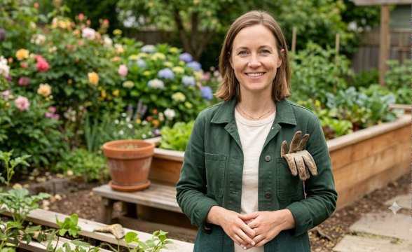
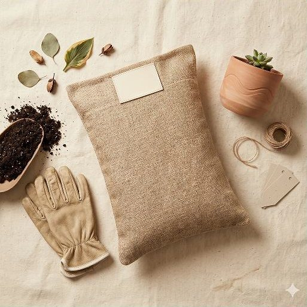
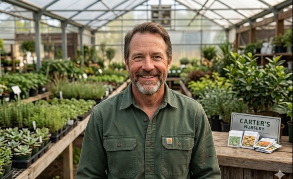
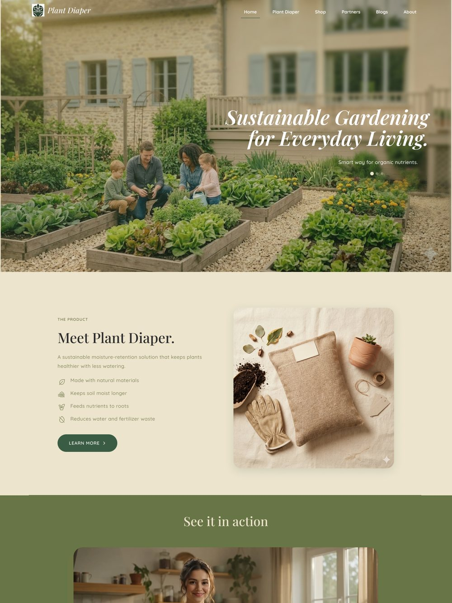
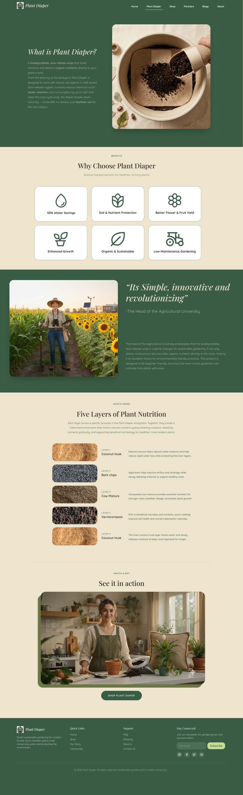
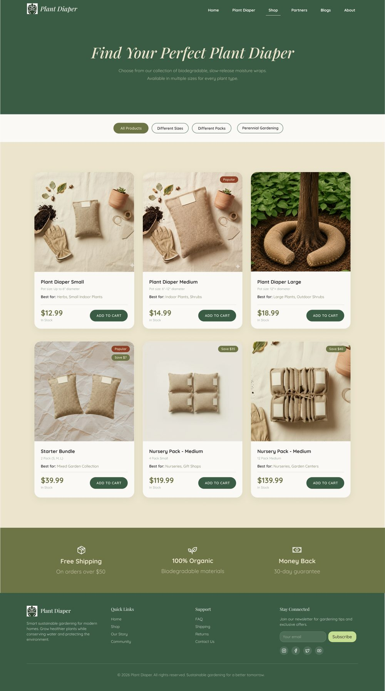
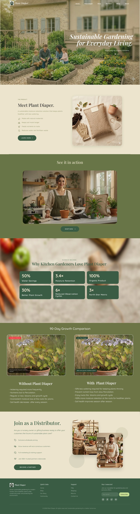

Home gardeners
Want healthier plants, less frequent watering, and a simpler care routine.
An e-commerce experience for a sustainable gardening product, designed to turn product education into purchase confidence.


Want healthier plants, less frequent watering, and a simpler care routine.

Need practical ways to maintain plant moisture during handling, shipping, and customer handover.
Want a product that retains moisture to improve plant survival during transit, and need eco-friendly alternatives to synthetic moisture solutions.
The challenge was to communicate Plant Diaper's value to people with different gardening needs without assuming they already understood the product.
I reviewed five competing watering and water-retention products to understand their mechanisms, messaging, strengths, limitations, and approaches to building customer trust.
| Competitor | Product approach | What I examined |
|---|---|---|
| Miracle-Gro | Water-retention crystals mixed into soil | Product explanation and established brand trust |
| TreeDiaper | Water-retaining mat | Water-saving claims and usage guidance |
| GrowOya | Porous pot that releases water gradually | Product mechanism and sustainability messaging |
| Organic Bazar | Bottle-based watering spikes | Setup instructions and product reviews |
| Kyari | Watering globes | Visual instructions and simplified product communication |
What emerged: Competitors used different mechanisms, but their communication repeatedly needed to explain how the product worked, what benefit it offered, and how to use it.
My research and competitor analysis highlighted four opportunities.
Show what Plant Diaper does and how it works, rather than relying on product claims alone.
Connect water retention to everyday gardening needs and understandable outcomes.
Use clear information, visual demonstrations, and supporting evidence to help customers assess the product.
Address the needs of individual gardeners as well as nursery owners and gift shop owners.
The opportunity was to make the website more than a product catalogue: it needed to help people understand the product before asking them to buy it.
Instead of presenting information as disconnected sections, I organised the experience around the questions a potential customer might ask.
Introduce the gardening problem and Plant Diaper's value proposition.
Explain the product, its mechanism, and how it fits into a gardening routine.
Present supporting information, benefits, and relevant comparisons.
Give users a clear path to explore products, calculate potential savings, or make a purchase.
The design brings together product storytelling, practical information, and purchase-oriented interactions.



The homepage introduces the gardening problem before presenting the product.
Screen AVisual storytelling helps users understand the product mechanism.
Screen BOrganised product information helps users explore the offering.
Screen CSupporting information helps customers evaluate the product's relevance to their needs.
Screen BCalls to action connect learning with product exploration and purchase.
Screen A
A static percentage communicates a general claim. An interactive calculator gives visitors a way to explore potential savings using their own inputs.
The calculator was designed to make the product's value feel more relevant to an individual's gardening context.
Discover how much water you can save annually with Plant Diaper
The calculator translates an abstract benefit into a more tangible experience.
When a product's positioning, sizing, or offering is still being defined, design needs to consider those upstream business decisions. The experience cannot be separated from what the business promises.
A website is not just a collection of screens. Introducing the problem, explaining the product, establishing credibility, and then presenting a call to action creates a more considered journey.
Colour, spacing, imagery, and interaction cues influence how people perceive a product before they have fully understood it. Design must make the product feel approachable without relying on aesthetics alone to establish trust.
A benefit becomes more meaningful when people understand how it works, what supports it, and how it relates to their own needs. Product education is part of the experience, not an afterthought.
Good product experiences don't simply ask people to buy. They help people understand why the product matters.
Plant Diaper challenged me to think beyond individual screens and consider how product positioning, research, content, and interaction work together to support a purchase decision.